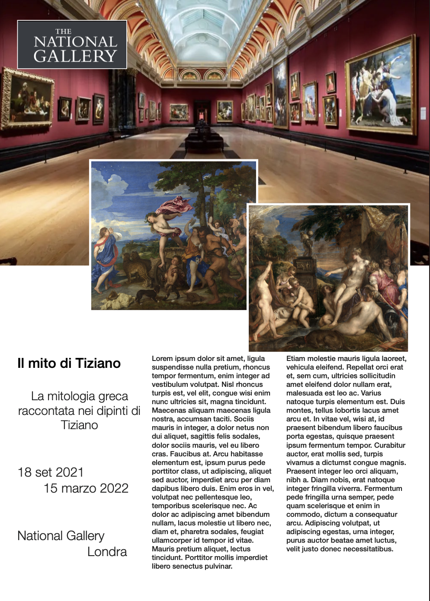

Il progetto
Il progetto "Il Mito a Ferrara" si propone di affrontare una lettura mirata del Camerino d'Alabastro voluto da Ercole I d'Este nel suo palazzo ferrarese. La stanza, per volere del signore di Ferrara, venne decorata da cinque dipinti realizzati dai massimi esponenti della pittura dell'epoca: Tiziano, Giovanni Bellini e Dosso Dossi. La tematica che accomuna le tele è il mito, e in particolare il racconto delle vicissitudini di Arianna e Bacco. La ricerca che sta alla base di questo sito di divulgazione, è l'analisi delle opere alla luce dei testi antichi da cui traggono spunto. Il mito che racconta di Bacco e Arianna verrà presentato sia attraverso le parole degli antichi, sia attraverso le pennellate dei moderni, il tutto unito nell'analisi di noi contemporanei.
Continua a leggere
Eventi
Consigliamo la visione della mostra d'arte presso la National Gallery di Londra, dove viene conservato il "Bacco e Arianna" di Tiziano. La mostra si propone di rileggere la mitologia greca sulla base dei dipinti dell'artista italiano.
Maggiori informazioniFONTI LETTERARIE
I testi di Ovidio e altri poeti latini vengono forniti come base per l'analisi delle opere degli artisti italiani che nella prima metà del Cinquecento decorarono le pareti del Camerino d'Alabastro nel palazzo ferrarese di Alfonso I d'Este.
Clicca per approfondire

OPERE D'ARTE
Tiziano, Bellini e Dosso Dossi fanno rivivere il mito antico attraverso le loro tele. Un'analisi delle loro opere sarà il punto di partenza per riunire antico e moderno e riportare in vita la storia di Bacco e Arianna.
Clicca per approfondire
SAGGI
Studiosi contemporanei ci vengono incontro in questo progetto. I loro spunti e le loro riflessioni sul tema di antico e moderno, mito e arte, storia e leggenda sono messi al servizio della vostra curiosità.
Clicca per approfondire